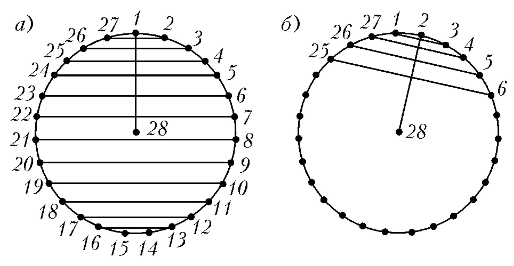
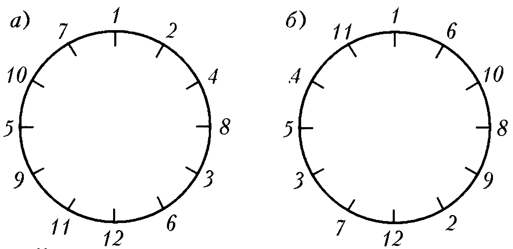
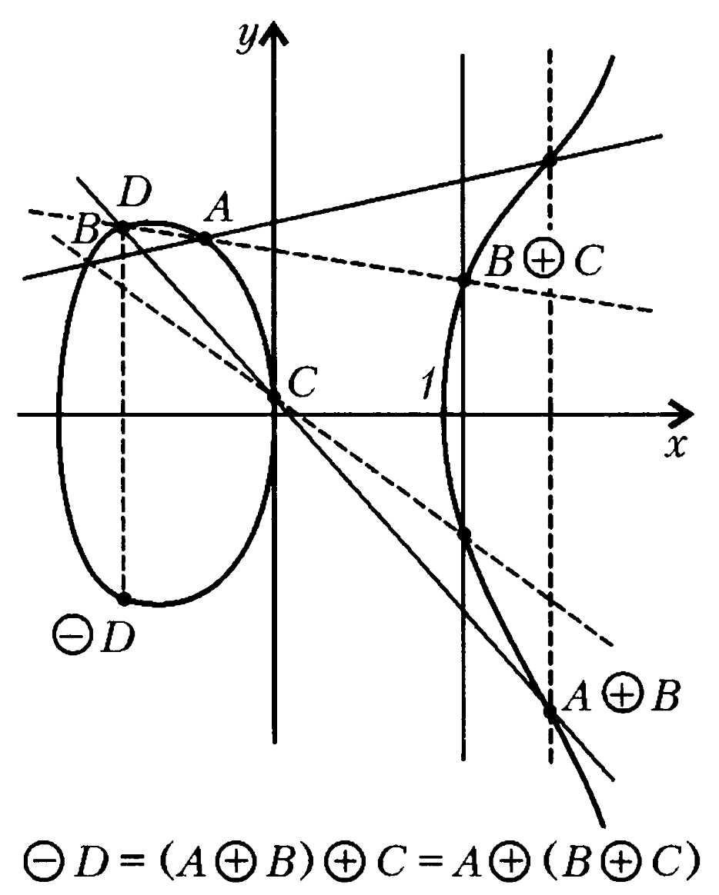

2 INTEGERS AND POLYNOMIALS
2-1. A student was sent an assignment consisting of 20 problems. For each correctly solved problem, they get 8 points, for each incorrectly solved problem - minus 5 points, for a problem they didn’t attempt to solve - 0 points. The student received a total of 13 points. How many problems did they attempt to solve?
2-2. Is it possible to exchange 25 rubles for 1-ruble, 3-ruble, and 5-ruble bills so that you get a total of 10 bills?
2-3. A rectangle 272 × 204 mm is drawn on graph paper (its sides follow the grid lines). Draw its diagonal and mark all the grid nodes that lie on it. Into how many parts do the nodes divide the diagonal?
2-4. a) From a rectangle 324 × 141 mm, several squares with a side of 141 mm are cut off until a rectangle remains with one side length less than 141 mm. From the resulting rectangle, squares are cut off, the sides of which are equal in length to its smaller side, as long as possible, and so on. What is the side length of the last square?
- Find any two numbers a and b so that when cutting a rectangle a × b in this way, squares of six different sizes are obtained.
2-5. Three machines print pairs of integers on cards. Each machine, after reading a certain card, produces a new card; after reading a card with the pair (m;n), the first machine produces a card (m - n;n), the second - a card (m + n;n), the third - a card (n;m). Let there initially be a card with a pair of numbers (19; 86). Is it possible, using the machines in any order, to obtain from it a card: a) (31; 13); b) (12; 21)?
2-6. One master makes blue pencil marks on a long ribbon from its beginning every 36 cm. Another master makes red pencil marks from the beginning every 25 cm. Can a blue mark be at a distance of 1 cm from any red mark?
2-7. Is it possible to divide an angle of 19° into 19 equal parts using only a compass and a ruler?
2-8. A circle is divided by 20 points into 20 equal parts. How many different closed polygonal lines of 20 equal segments with vertices at these points can be constructed? (Two polygonal lines that can be obtained from each other by rotation are considered the same.)
2-9. Is it true that from 100 arbitrary integers, one can always choose: a) 15; b) 16 such that the difference of any two is divisible by 7?
2-10. Prove that if the sum of squares of two integers is divisible by 3, then each of them is divisible by 3.
2-11. Prove that there exist infinitely many natural numbers that cannot be represented as the sum of cubes of three non-negative integers.
2-12. There are 28 students in a class who sit in pairs at 14 desks. At the beginning of each month, the teacher seats them so that two people who have never sat together before sit at each desk. What is the maximum number of months the teacher will be able to do this?
2-13. Find any three consecutive natural numbers, each of which is divisible by the square of an integer greater than one.
2-14. Is it possible to arrange all 12 numbers 1, 2, …, 12 in a circle so that for any three numbers a, b, c standing in a row, the number \(b^2 - ac\) is divisible by 13?
2-15. Is it true that for any natural n, the number \(n^3 + 5n - 1\) is prime?
2-16. Prove that for any integer n, the number \(n^3 - 5n + 4\) is divisible by 120.
2-17. Is there a polynomial p(x) with integer coefficients such that: a) p(0) = 19, p(1) = 85, p(2) = 1985; b) p(1) = 19, p(19) = 85?
2-18. Factor the polynomial: a) \(x^8 + x^4 + 1\) into three factors, b) \(x^5 + x + 1\) into two factors with integer coefficients.
2-19. For what value of a do the polynomials \(x^3 + ax + 1\) and \(x^2 + ax + 1\) have a common root?
2-20. Consider the set M of natural numbers representable as \(x^2 + 5y^2\), where x and y are some integers. a) Prove that the product of two numbers from M also belongs to M. b) Let’s call a number from M greater than 1 basic if it is not divisible by any number from M except itself and 1. Are there numbers from M that can be represented in two different ways as a product of basic numbers? c) Prove that there are infinitely many basic numbers.
2-21. It’s easy to specify a triple of squares of integers forming an arithmetic progression: 1, 25, 49. Find three more such triples (from squares of numbers that have no common divisor).
2-22. a) Find 7 solutions in integers for the equation \(y^2 = 6(x^3 - x)\). b) Find 4 more solutions in rational numbers.
2.1 Problems Discussion
Problem 2-1. Answer: The student solved 13 problems. Let \(x\) be the number of correctly solved problems, and \(y\) be the number of incorrectly solved problems. Then \(8x - 5y = 13\). Rewriting this equation in the form \[8(x + y) = 13(1 + y),\] we see that the number \(x + y\) is divisible by 13. On the other hand, according to the condition, \(x + y\) is not greater than 20. Therefore, \(x + y = 13\) (in this case, \(x = 6, y = 7\)).
— It is possible to solve the equation \(8x - 5y = 13\) in this way. One solution is immediately guessed: \(x_0 = 1, y_0 = -1\). For any integer \(t\), the pair of numbers \(x = 1 + 5t, y = -1 + 8t\) also satisfies this equation. Indeed, \(8(1 + 5t) - 5(-1 + 8t) = (8 + 5) + (40t - 40t) = 13\). Moreover, \(x + y = 13t\), and since \(x + y \le 20\), then \(t = 1, x + y = 13, x = 6, y = 7\).
For any linear equation of the form \(ax - by = c\) (where \(a\) and \(b\) are coprime numbers), the general form of solutions in integers can be written according to the same scheme. We find some integer solution \((x_0; y_0)\). Then \(x = x_0 + bt, y = y_0 + at\), where \(t \in \mathbb{Z}\), are all the solutions.
Problem 2-2. Answer: It is not possible.
Suppose that it is possible to take \(k\) one-ruble, \(l\) three-ruble, and \(m\) five-ruble bills so that the conditions of the problem are satisfied, i.e., \(k + l + m = 10\) and \(k + 3l + 5m = 25\).
Subtracting the first equality from the second, we get: \(2l + 4m = 15\). But the last equality is impossible, since its left side is even, and the right side is not. Therefore, our assumption is incorrect.
— In general, an equation of the form \(ax - by = c\) has a solution in integers if and only if \(c\) is divisible by the greatest common divisor gcd\((a, b)\) of the numbers \(a\) and \(b\). In problem 2-2, \(c = 15\) is not divisible by gcd\((a, b) =\) gcd\((2, 4) = 2\).
Problem 2-3. Answer: into 68 parts. Divide each of the two adjacent sides of the rectangle into 68 equal parts and draw straight lines through the division points along the grid lines. Then the diagonal of the rectangle will be divided by the grid nodes into 68 equal parts, which are the diagonals of rectangles of size \(3 \times 4\) mm. There are no grid nodes on the diagonal of each such rectangle.
∇ In the general case, the diagonal of an \(m \times n\) rectangle is divided by the grid nodes into gcd\((m, n)\) equal segments.
Problem 2-4. a) Answer: 3 mm. Let’s perform division with remainder: \(324 = 141 \times 2 + 42\) (2 squares with a side of 141 mm), \(141 = 42 \times 3 + 15\) (3 squares with a side of 42 mm), \(42 = 15 \times 2 + 12\) (2 squares with a side of 15 mm), \(15 = 12 \times 1 + 3\) (1 square with a side of 12 mm), \(12 = 3 \times 4\) (4 squares with a side of 3 mm).
∇ For an arbitrary rectangle \(a \times b\), the length of the side of the last square is equal to gcd\((a, b)\).
Indeed, the procedure of successive division with remainder that we performed in the solution of the problem is the Euclidean algorithm for finding gcd\((a, b)\) (see [34, 88, 98]).
The Euclidean algorithm is based on the following fact. Let \(a = bq + r\), then gcd\((a, b) =\) gcd\((b, r)\). The algorithm itself can be described as follows. If we have two numbers \(a\) and \(b\), where \(a > b > 0\), then first we divide \(a\) by \(b\) and get the remainder \((0 \le r < b)\). Then we divide \(b\) by \(r\) and find the remainder \(r_2 (0 \le r_2 < r)\). Next, we divide \(r\) by \(r_2\), and we get the remainder \(r_3 (0 \le r_3 < r_2)\), and so on, until some remainder \(r_{n-1}\) is divisible by the remainder \(r_n\) without a remainder, i.e., \(r_{n+1} = 0\). The last non-zero remainder \(r_n\) is gcd\((a, b)\). In fact, \(r_n =\) gcd\((r_n, r_{n-1}) =\) gcd\((r_{n-1}, r_{n-2}) = ... =\) gcd\((r_2, r_1) =\) gcd\((r_1, b) =\) gcd\((a, b)\).
In problem 2-4 a), we encountered a geometric illustration of this algorithm.
Note also that from the sequence of quotients \(q_1, q_2, ..., q_n\) obtained in the process of applying the Euclidean algorithm, one can write the expansion of the fraction \(a/b\) into a continued fraction (see [66, 61, 119]): \[\frac{a}{b} = q_1 + \frac{1}{q_2 + \frac{1}{q_3 + ... + \frac{1}{q_n}}}\]
- Answer: for example, \(a = 21, b = 13\).
Indeed, let’s perform division with remainder: \(21 = 1 \times 13 + 8\); \(13 = 1 \times 8 + 5\); \(8 = 1 \times 5 + 3\); \(5 = 1 \times 3 + 2\); \(3 = 1 \times 2 + 1\); \(2 = 2 \times 1\). Thus, we get squares with sides of 13, 8, 5, 3, 2, 1, respectively – six different sizes.
∇ For any natural number \(n\), it is possible to find such numbers \(a\) and \(b\) that the cutting will result in exactly \(n\) different sizes of squares.
As such numbers, one can take the numbers \(F_{n+2}\) and \(F_{n+1}\) of the Fibonacci sequence, which is defined as follows: \(F_1 = 1, F_2 = 1, F_3 = 2, ..., F_k = F_{k-1} + F_{k-2}\) for \(k \ge 3\).
If we set \(a = F_{n+2}\) and \(b = F_{n+1}\), then each time only one square with a side length of \(F_{k-1}\) will be cut off from the rectangle \(F_k \times F_{k-1}\), and a rectangle \(F_{k-1} \times F_{k-2}\) will remain.
In the solution of problem 2-4 b), we took \(F_7 = 13\) and \(F_8 = 21\); the sizes of the squares turned out to be equal to the first six different Fibonacci numbers: 1, 2, 3, 5, 8, 13.
The constructed example of a rectangle \(a \times b\) has the smallest possible (for a given \(n\)) dimensions; in other words, if the numbers \(a\) and \(b\) are not greater than \(F_{n+2}\), then the Euclidean algorithm gives gcd\((a, b)\) not greater than \(n\) in \(n\) steps (see [63]).
Note also that for the ratio \(F_{n+1}/F_n\) of two adjacent Fibonacci numbers, the expansion into a continued fraction has an extremely simple form; it consists only of ones. For example, \[\frac{F_8}{F_7} = \frac{21}{13} = 1 + \frac{1}{1 + \frac{1}{1 + \frac{1}{1 + \frac{1}{1 + \frac{1}{1}}}}}\]
Problem 2-5. a) Answer: It is possible.
Let’s denote the operations of the machines as I, II, III, respectively, and agree to write \(n\) consecutive operations of I or II as \(I^n\) or \(II^n\), respectively.
Then the card (31; 13) can be obtained from the card (19; 86) as follows:
(19; 86) \(\xrightarrow{III}\) (86; 19) \(\xrightarrow{I^4}\) (10; 19) \(\xrightarrow{III}\) (19; 10) \(\xrightarrow{I}\) (9; 10) \(\xrightarrow{III}\) (10; 9) \(\xrightarrow{I}\) (1; 9) \(\xrightarrow{III}\) (9; 1) \(\xrightarrow{I}\) (8; 1) \(\xrightarrow{III}\) (1; 8) \(\xrightarrow{II}\) (9; 8) \(\xrightarrow{III}\) (8; 9) \(\xrightarrow{II^7}\) (22; 9) \(\xrightarrow{III}\) (9; 22) \(\xrightarrow{II^2}\) (31; 22) \(\xrightarrow{III}\) (22; 31) \(\xrightarrow{II}\) (31; 13)
- Answer: it’s not possible.
Since operations I, II, III preserve gcd(m,n), and gcd(19; 81) = 1 ≠ gcd(12; 21) = 3, it’s impossible to obtain the card (12; 21) from the card (19; 81).
∇ The necessary and sufficient condition for obtaining a card (a, b) from a card (m, n) is that gcd(m, n) = gcd(a, b).
The necessity of this condition is obvious; all operations I, II, III preserve gcd.
If this condition is met, then both cards can be reduced to a card (d, d) using operations I and III according to the Euclidean algorithm.
Indeed, each step of the Euclidean algorithm is division with remainder of number a by number b: \(a = bq + r\) \((0 \leq r < b)\). This step can be performed as follows:
\((a,b) \xrightarrow{I^q} (r,b)\)
Then, after the operation \((r,b) \xrightarrow{III} (b,r)\), we can similarly make the next step of the algorithm and so on until we get the card (d,d).
Going along the chain \((a, b) \rightarrow ... \rightarrow (d, d)\) in reverse order, replacing operation I with operation II, we will get the card (a,b) from the card (d,d).
Thus, by performing a “descent” from (m, n) to (d, d), and then an “ascent” from (d, d) to (a, b), we will ultimately go from card (m, n) to card (a, b), which was required. Problem 2-6. Answer: it can.
For example, the 9th blue mark and the 13th red mark are 1 cm apart from each other, because \(13 \cdot 25 - 9 \cdot 36 = 1\). In this problem, we essentially needed to find some solution in integers to one of the equations:
\(25x - 36y = 1\), \(25x - 36y = -1\)
or prove that such solutions do not exist.
There is a standard procedure by which one can always find a solution to the equation \(ax + by = 1\), if \(\gcd(a,b) = 1\). Let’s demonstrate it on our problem. Let’s write out all the steps of the Euclidean algorithm (see discussion of problem 2-4 a)) for finding \(\gcd(36,25)\):
\(36 = 25 \cdot 1 + 11\); \(25 = 11 \cdot 2 + 3\); \(11 = 3 \cdot 3 + 2\); \(3 = 2 \cdot 1 + 1\).
Let’s rewrite this chain of equalities as:
\(11 = 36 - 25 \cdot 1\); \(3 = 25 - 11 \cdot 2\); \(2 = 11 - 3 \cdot 3\); \(1 = 3 - 2 \cdot 1\).
Then we get:
\(1 = 3 - (11 - 3 \cdot 3) = 3 \cdot 4 - 11 = (25 - 11 \cdot 2) \cdot 4 - 11 =\) \(= 25 \cdot 4 - 11 \cdot 9 = 25 \cdot 4 - (36 - 25) \cdot 9 = 25 \cdot 13 - 36 \cdot 9\).
As a result, we get the equality \(25 \cdot 13 - 36 \cdot 9 = 1\), giving one solution (13, 9) to the equation \(25x - 36y = 1\).
Problem 2-7. Answer: it is possible.
Draw any circle with the center at the vertex of the given angle. The sides of this angle cut out an arc of 19° on the circle.
If we consecutively mark off this arc on the circle 18 more times with a compass, then, since \(19 \times 19 = 361\), the last mark will cut off an arc of 1° from the first arc. Marking off this arc 17 more times with a compass, we will divide the 19° arc into 19 equal parts. Connecting the resulting marks with the vertex of the angle, we will divide the given 19° angle into 19 equal parts.
Let \(m\) and \(n\) be coprime natural numbers (\(\gcd(m,n) = 1\)) and \(m < n\). By marking off equal arcs on the circle consecutively one after another, each comprising \(\frac{1}{n}\) of the full circle, we can obtain all vertices of a regular \(n\)-gon inscribed in the circle in \(n\) steps (making \(m\) full rotations in the process). At some \(x\)-th step we will get a vertex adjacent to the initial one, at which point we will have made some number \(y\) of full rotations and also passed \(\frac{1}{n}\) of the circle, so that \(x \cdot \frac{m}{n} = y + \frac{1}{n}\). From this we get a geometric method for solving the equation
\(xm - yn = 1\)
in integers. In our problem \(m = 19\), \(n = 360\), \(x = 19\), \(y = 1\). Problem 2-8. Answer: 4 polygonal lines.
Let’s consider some division point as the initial one and number all division points clockwise starting from it with numbers \(1, 2, 3, ..., 20\).
Polygonal lines with equal links will be obtained if we sequentially connect each point with the \(k\)-th one after it until we return to the initial point \(1\).
For \(k = 1\), we get a regular 20-gon with vertices at points \(1, 2, 3, ..., 20\).
For \(k = 2\), a regular 10-gon with vertices at points \(1, 3, 5, ..., 19\).
For \(k = 3\), a self-intersecting closed polygonal line with 20 vertices at points \(1, 4, 7, 10, 13, 16, 19, 2, 5, 8, 11, 14, 17, 20, 3, 6, 9, 12, 15, 18\).
For \(k = 4\), a regular pentagon.
For \(k = 5\), a square.
For \(k = 6\), a self-intersecting closed polygonal line with 10 vertices at points \(1, 7, 13, 19, 5, 11, 17, 3, 9, 15\).
For \(k = 7\), again a 20-link polygonal line.
For \(k = 8\), a 5-link polygonal line (a five-pointed star).
For \(k = 9\), again a 20-link polygonal line.
For \(k = 10\), we get a degenerate 2-link polygonal line - a twice traversed segment.
For \(k = 11\), we get the same polygonal line as for \(k = 9\), since connecting points through 10 clockwise is the same as connecting them through 8 counterclockwise.
Similarly, for \(k = 12, 13, ..., 19\), we get the same polygonal lines as for \(k = 8, 7, ..., 1\) respectively.
Thus, there are a total of four different 20-link polygonal lines, they are obtained for \(k = 1, 3, 7, 9\).
∇ For any \(n\), the number of different regular \(n\)-link closed polygonal lines will be equal to the number of natural numbers less than \(\frac{n}{2}\) and coprime with \(n\).
The number of natural numbers less than a given number \(n\) and coprime with it is usually denoted by \(\phi(n)\). The function \(\phi(n)\) is called Euler’s function; if \(p_1, p_2, ..., p_l\) are all distinct prime numbers included in the factorization of the number \(n\) into prime factors, then ϕ(n)=n(1−1p1)(1−1p2)…(1−1pl). ϕ(n)=n(1−p11)(1−p21)…(1−pl1).
The answer to the generalization of problem 2-8 can be written as follows: the number of different regular \(n\)-link polygonal lines is equal to \(\frac{\phi(n)}{2}\). In particular, if \(n = 20\), then \(\phi(20) = 20\left(1 - \frac{1}{2}\right)\left(1 - \frac{1}{5}\right) = 8\), and the number of polygonal lines is equal to \(\frac{8}{2} = 4\) (see [88]). Problem 2-9. a) Answer: correct. The difference of two numbers is divisible by 7 if and only if the remainders of these numbers when divided by 7 are equal. When dividing by 7, there are seven possible remainders: 0, 1, 2, 3, 4, 5, 6. Let’s assume that it’s impossible to choose 15 required numbers from 100. This means that no more than 14 numbers give a remainder of 0 when divided by 7, no more than 14 numbers give a remainder of 1, and similarly for remainders 2, 3, 4, 5, 6. But then the total number of numbers would be no more than \(14 \cdot 7 = 98 < 100\), and our assumption is incorrect.
∇ The solution to problem 2-9 a) is a typical example of applying the pigeonhole principle: if \(nk + 1\) rabbits are in \(n\) cages, then at least one cage has no fewer than \(k + 1\) rabbits (see [43]). Indeed, if each cage had no more than \(k\) rabbits, then the total number of rabbits would be no more than \(nk\), which contradicts the condition.
- Answer: incorrect. Let’s provide a counterexample: the first hundred natural numbers from 1 to 100. Among them, there are 14 numbers: 7, 14, …, 98, giving a remainder of 0; 15 numbers each giving remainders of 1 and 2; 14 numbers each giving remainders of 3, 4, 5, 6. Therefore, among them, there are no 16 numbers for which the difference of any two is divisible by 7.
Problem 2-10. Every integer is either divisible by 3 or gives a remainder of 1 or 2 when divided by 3.
If a number \(n\) is divisible by 3, it can be written as \(n = 3k\), so its square can be written as \(9k^2\), which is clearly divisible by 3.
If a number \(n\) gives a remainder of 1 when divided by 3, it can be written as \(n = 3k + 1\), then for its square we get: \(n^2 = 3(3k^2 + 2k) + 1\), which shows that the square also gives a remainder of 1 when divided by 3.
If a number \(n\) gives a remainder of 2 when divided by 3, similarly we get: \(n^2 = 3(3k^2 + 4k + 1) + 1\), i.e., in this case too, the square of the number \(n\) gives a remainder of 1 when divided by 3.
If exactly one of two numbers is not divisible by 3, then its square when divided by 3 gives, as we have seen, a remainder of 1, so the sum of the squares of these two numbers when divided by 3 gives a remainder of 1; and if neither of the two numbers is divisible by 3, then their squares both give remainders of 1 when divided by 3, so the sum of their squares when divided by 3 will give a remainder of 2.
Thus, the sum of the squares of two integers is divisible by 3 only if each of them is divisible by 3. If a number n gives a remainder of 1 when divided by 3, it can be written as n = 3k + 1, then for its square we get: \(n^2 = 3(3k^2 + 2k) + 1\), from which it’s clear that the square when divided by 3 also gives a remainder of 1.
If a number n gives a remainder of 2 when divided by 3, we similarly get: \(n^2 = 3(3k^2 + 4k + 1) + 1\), i.e., in this case too, the square of the number n gives a remainder of 1 when divided by 3.
If exactly one of two numbers is not divisible by 3, then its square when divided by 3 gives, as we have seen, a remainder of 1, so the sum of the squares of these two numbers when divided by 3 gives a remainder of 1; and if neither of the two numbers is divisible by 3, then their squares both give remainders of 1 when divided by 3, so the sum of their squares when divided by 3 will give a remainder of 2.
Thus, the sum of the squares of two integers is divisible by 3 only if each of them is divisible by 3.
∇ The transition from integers to their remainders when divided by a fixed number m is the main technique in problems on the divisibility of integers. The following simple rule is constantly used: to find the remainder of the division by m of the sum or product of two (or several) integers, it is sufficient to perform the same operations with the remainders and find what remainder the result gives when divided by m.
Let’s show, for example, that the statement of problem 2-10 remains true if we replace the number 3 in its condition with the number 7. By squaring the numbers from 0 to 6, we can see that the remainders given by the squares of integers when divided by 7 are only 0, 1, 2, and 4. Since no two of these four numbers, except for a pair of zeros, sum to a number divisible by 7, the sum of the squares of two integers is divisible by 7 only if each number is divisible by 7.
For experts. The question of whether, for a given prime number p, the sum of squares of two integers \(x^2 + y^2\) can be divisible by p if neither of them is divisible by p, is equivalent to this: is (-1) a quadratic residue modulo p, i.e., does there exist such z that \(1 + z^2\) is divisible by p. The answer (known since Euler): this is possible for numbers p of the form 4k + 1 (p = 5, 13, 17, 29, …) and impossible for p = 4k + 3 (p = 3, 7, 11, 19, 23, …) A generalization of this fact, allowing for any two numbers q and p to quickly decide whether q is a quadratic residue modulo p, is the quadratic reciprocity law of Gauss (see [31, 88]). Problem 2-11. Let’s show that no number of the form 9n + 4, where n is a natural number, can be represented as the sum of three cubes; since there are infinitely many numbers of this form, the statement of the problem will follow from this.
Any integer has either the form 3l, or 3l + 1, or 3l - 1, where l is an integer. Therefore, the cube of any integer has the form either \(27l^3\), or
\(27l^3 \pm 27l^2 + 9l \pm 1 = 9(3l^3 \pm 3l^2 + l) \pm 1\),
i.e., it has the form either 9m or 9m ± 1.
Combining these possibilities in all ways, we get that the sum of cubes of three integers is represented by one of the following variants: 9n; 9n ± 1; 9n ± 2; 9n ± 3, but cannot equal a number of the form 9n + 4 (and, by the way, 9n - 4).
is divisible by p. The answer (known since Euler): this is possible for numbers p of the form 4k + 1 (p = 5, 13, 17, 29, …) and impossible for p = 4k + 3 (p = 3, 7, 11, 19, 23, …) A generalization of this fact, allowing for any two numbers q and p to quickly decide whether q is a quadratic residue modulo p, is the quadratic reciprocity law of Gauss (see [31, 88]).
∇ In 1909, the following hypotheses of E. Waring (1770) were proved: every natural number can be represented as the sum of no more than 9 cubes of natural numbers; for each natural k, any natural number can be represented as the sum of w or fewer k-th powers of natural numbers, where w depends only on k. The first hypothesis was proved by A. Wieferich, the second by D. Hilbert (its elementary proof was obtained by Yu.V. Linnik). The smallest value of w = w(k) is unknown already for k = 4 (see [5, 118]).
Interestingly, every natural number n can be easily represented as the sum of five cubes of integers.
Indeed, n - n^3 is divisible by 6 for all n. Therefore, n = n^3 + 6t, where t is an integer. Hence
\(n = n^3 + (t+1)^3 + (t-1)^3 + (-t)^3 + (-t)^3\).
Problem 2-12. Since each student could sit with no more than 27 students, this could not last more than 27 months.
Let’s show how the teacher could seat the students for 27 months.
Let’s number the students from 1 to 28. We place the numbers from 1 to 27 on a circle at the vertices of a regular 27-gon, and number 28 at the center of this circle. We connect points 1 and 28 with a line segment. We connect the remaining points in pairs with line segments perpendicular to this segment - see Figure 10,a. We seat the students as follows: if two numbers are connected by a segment, we seat the corresponding students at the same desk.

In the next month, we connect points 2 and 28 with a line segment and draw perpendicular segments through the remaining points; we seat the students according to this scheme - Figure 10,b. Then we take in turn the segments 28-3, 28-4, …, 28-27 and draw segments perpendicular to each of them. Let’s note that in Figure 10a, the sum of the numbers of each pair of circle points connected by a segment is equal to 29, which gives a remainder of 2 when divided by 27, and point 1 is connected to the center point 28. This last pair is in a special position: among the numbers from 1 to 27, it’s impossible to find such a pair for number 1, other than itself, so that the sum of the numbers in this pair gives a remainder of 2 when divided by 27.
In Figure 10b, the situation is similar: the sums of pairs of numbers of connected points give a remainder of 4 when divided by 27, and for number 2, among the numbers from 1 to 27, there is no suitable pair other than itself; this number 2 is connected to the center 28.
These observations lead to the following numerical interpretation of the schedule given in problem 2-12.
We fix some number \(r\) from 1 to 27. We pair those numbers from 1 to 27 which, when summed, give a remainder \(r\) when divided by 27. In this case, only the number \(x\) will remain unpaired, which, when summed with itself, gives a remainder \(r\) when divided by 27. If \(r\) is even, then \(x = \frac{r}{2}\), and if odd, then \(x = \frac{r+27}{2}\). We connect this number \(x\) with number 28.
For any even number \(n\) of students, a schedule for \(n-1\) months can be similarly compiled. To do this, we need to pair those numbers from the set of all integers from 1 to \(n-1\) whose sum gives a remainder \(r\) when divided by \(n-1\). If \(r\) is even, then the number \(\frac{r}{2}\) will remain unpaired, and if odd, then the number \(\frac{r+n-1}{2}\); we pair this number with the remaining number \(n\) (see [34], [124]).
Problem 2-13. Answer: for example, 48, 49, 50 or 548, 549, 550.
It can be shown that in general, for any \(k\), there exist \(k\) consecutive natural numbers, each of which is divisible by the square of an integer greater than one.
Here it’s appropriate to use the so-called Chinese Remainder Theorem (see [88]): whatever the natural pairwise coprime numbers \(a_1, a_2, ..., a_n\) and non-negative integers \(r_1, r_2, ..., r_n\) (\(r_1 < a_1, r_2 < a_2, ..., r_n < a_n\)), there exists such a natural number \(m\), which when divided by the numbers \(a_1, a_2, ..., a_n\) gives remainders \(r_1, r_2, ..., r_n\) respectively.
Let \(p_1^2, p_2^2, ..., p_n^2\) be squares of \(n\) different prime numbers. Then, according to this theorem, there exists such an integer \(m\) that when divided by the numbers \(p_1^2, p_2^2, ..., p_n^2\) gives remainders \(p_1^2 - 1, p_2^2 - 2, ..., p_n^2 - n\) respectively. Therefore, \(n\) consecutive numbers \(m+1, m+2, ..., m+n\) will be divisible by \(p_1^2, p_2^2, ..., p_n^2\) respectively.
The example (548, 549, 550) given in the answer was selected in this way: we set \(p_1 = 2, p_2 = 3, p_3 = 5\), find the number \(m\) which gives remainders 3, 7, and 22 respectively when divided by 4, 9, and 25; for example, the number \(m = 547\) works. This number m can be chosen as follows. We look for it in the form: m = a ⋅ 9 ⋅ 25 + 4 ⋅ b ⋅ 25 + 4 ⋅ 9 ⋅ c.
We need the number a ⋅ 9 ⋅ 25 to give a remainder of 3 when divided by 4, the number 4⋅b⋅25 to give a remainder of 7 when divided by 9, and the number 4⋅9⋅c to give a remainder of 22 when divided by 25. By setting a=-1, b=7, c=2, we get m=547.
Problem 2-14. Answer: it’s possible.
Figure 11 shows two examples of the required arrangement. This can be verified by simple counting.

∇ The numbers written on the first circle in Figure 11a clockwise are the remainders from dividing consecutive powers 1, 2, 2², 2³, …, 2¹¹ by 13, and counterclockwise - the remainders of consecutive powers 1, 7, 7², 7³, …, 7¹¹. Naturally, for any three adjacent numbers a, b, c (and therefore for their remainders when divided by 13), the number b² - ac is divisible by 13; if three numbers a, b, c form a geometric progression, then b² = ac.
Similarly, in Figure 11b, the remainders from dividing by 13 consecutive powers 1, 6, 6², …, 6¹¹ (clockwise) and 1, 11, 11², …, 11¹¹ (counterclockwise) are written out.
The numbers 2, 6, 11, 7 standing next to 1 in Figure 11 are the remainders when dividing 2, 2⁵, 2⁷, 2¹¹ by 13.
In general, for any prime p there exists a primitive root - a number coprime with p-1 numbers from 1 to p-2 (see the comment to problem 2-8).
In problem 2-14, p=13, φ(p-1)=φ(12)=4, as there are 4 numbers, 1, 5, 7, 11, coprime with 12 and less than it: all primitive roots are remainders from dividing 2, 2⁵, 2⁷, 2¹¹ by 13 (see [88]). Problem 2-15. Answer: incorrect. For example, for n = 6, the number \(n^3 + 5n - 1\) is equal to \(5 \cdot 72\).
An expert would immediately answer the problem’s question negatively, since, apart from constants, there are no polynomials \(F(n)\) with integer coefficients whose values are prime numbers for all natural \(n\).
Indeed, if the constant term \(a\) of the polynomial is not equal to 0 or ±1, then the values of \(F(ka)\) for integer \(k\) are divisible by \(a\), and among them there are composite numbers.
If \(a = ±1\), then one can first “shift” the polynomial \(F(n)\) to \(F(n+h) = G(n)\) so that the constant term becomes different from ±1.
In problem 2-15, to find \(n\) for which \(F(n) = n^3 + 5n - 1\) is a composite number, one can proceed as follows. Let \(n = m + 1\); the polynomial \(F(m+1) = (m+1)^3 + 5(m+1) - 1\) has a constant term equal to 5, and therefore \(F(6)\) is divisible by 5.
Note that in 1970, our compatriot mathematician Yu. V. Matiyasevich proved the existence of a polynomial of 21 variables with integer coefficients having the following property: the set of its positive values for integer values of the variables coincides with the set of prime numbers (see [47, 54, 100]).
Problem 2-16. Let’s factor the given number: \(n^5 - 5n^3 + 4n = n(n^4 - 5n^2 + 4) = n(n^2 - 1)(n^2 - 4) = (n-2)(n-1)n(n+1)(n+2)\).
The result is a product of five consecutive integers. One of these numbers is necessarily divisible by 5, one of three consecutive numbers is divisible by 3, and out of four consecutive numbers, one is divisible by 4 and another by 2. Therefore, the product is divisible by 120.
Another, combinatorial solution to this problem can be obtained if we notice that for \(n > 3\) the number \(\frac{(n+2)(n+1)n(n-1)(n-2)}{1 \cdot 2 \cdot 3 \cdot 4 \cdot 5}\) is the binomial coefficient \(C_{n+2}^5\) (the number of 5-element subsets of \((n+2)\) elements), and this number is undoubtedly an integer.
In general, a polynomial \(F(x)\) takes integer values for all integer \(x\) if and only if it can be represented as a sum \(F(x) = \sum_k a_k C_x^k\) with integer coefficients \(a_k\), where \(C_x^k = \frac{x(x-1)...(x-k+1)}{k!}\). Problem 2-17. a) Answer: yes.
It is convenient to search for such a polynomial in the form \(p(x) = ax(x-1) + bx + c\).
Substituting \(x = 0\), \(x = 1\), and \(x = 2\) into this identity, we obtain a convenient “triangular” system of linear equations for determining the coefficients \(a\), \(b\), and \(c\):
\(c = 19\) \(b + c = 85\) \(2a + 2b + c = 1985\)
From which we find: \(c = 19\), \(b = 66\), \(a = 917\), and we get the answer: \(p(x) = 917x^2 - 851x + 19\).
Similarly, it is convenient to search for a polynomial of degree no higher than \(n\) that takes given values at given \(n+1\) points \(c_1, c_2, \dots, c_{n+1}\). Writing \(p(x)\) in the form \(p(x) = b_0 + b_1(x-c_1) + b_2(x-c_1)(x-c_2) + \dots + b_n(x-c_1)(x-c_2)\dots(x-c_n)\) and substituting \(x = c_1, c_2, \dots, c_{n+1}\) into this identity, we obtain a triangular linear system for determining the \(n+1\) unknown coefficients \(b_0, b_1, \dots, b_n\).
The indicated method for finding a polynomial with given values is called Newton’s interpolation method.
- Answer: no, it does not exist.
For the proof, we use the following statement: if a polynomial \(p(x) = a_0x^n + a_1x^{n-1} + a_2x^{n-2} + \dots + a_{n-1}x + a_n\) with integer coefficients is given, then for any integers \(c\) and \(d\), the integer \(p(c) - p(d)\) is divisible by \(c-d\).
According to this statement, the number \(p(19) - p(1) = 1985 - 85 = 1900 - 19 = 1881\) should be divisible by \(19 - 1 = 18\). However, \(1881 = 1800 + 81\), so \(1881/18\) is not an integer. Since \(p(19) - p(1) = 66\) which is not divisible by \(18\), the answer follows.
Let’s prove the validity of the stated assertion: \(p(c) - p(d) = (a_0c^n + a_1c^{n-1} + \dots + a_{n-1}c + a_n) - (a_0d^n + a_1d^{n-1} + \dots + a_{n-1}d + a_n) = a_0(c^n - d^n) + a_1(c^{n-1} - d^{n-1}) + \dots + a_{n-1}(c - d)\).
For any natural \(k\), the formula \(c^k - d^k = (c-d)(c^{k-1} + c^{k-2}d + \dots + cd^{k-2} + d^{k-1})\) holds (it is obtained from the formula for the sum of \(k\) terms of a geometric progression with the first term \(c^{k-1}\) and common ratio \(d/c\)). Therefore, each term in the obtained equality for \(p(c) - p(d)\) is divisible by \(c-d\), which means the entire sum is divisible by \(c-d\).
Similarly, one can show that for any polynomial \(p(x)\) and any number \(d\), the polynomial \(p(x) - p(d)\) is divisible by the polynomial \(x-d\), i.e., \(p(x) - p(d) = (x-d)q(x)\), where \(q(x)\) is some polynomial. Rewriting this identity as \(p(x) = (x-d)q(x) + p(d)\), we obtain the following Bézout’s theorem: the remainder of dividing the polynomial \(p(x)\) by the binomial \((x-d)\) is \(p(d)\).
Problem 2-18. a) Answer: \((x^2-x+1)(x^2+x+1)(x^4-x^2+1)\).
Indeed: \(x^8 + x^4 + 1 = x^8 + 2x^4 + 1 - x^4 = (x^4+1)^2 - (x^2)^2 = (x^4+1-x^2)(x^4+1+x^2) = (x^4-x^2+1)(x^4+x^2+1)=(x^4-x^2+1)(x^2+x+1)(x^2-x+1).\)
- Answer: \((x^2+x+1)(x^3-x+1)\).
Indeed: \(x^5+x+1 = x^5-x^2+x^2+x+1 = x^2(x^3-1)+x^2+x+1 = x^2(x-1)(x^2+x+1)+x^2+x+1= (x^2+x+1)(x^3-x^2+1)=(x^2+x+1)(x^3-x+1)\).
There exist polynomials of any degree with integer coefficients that cannot be factored into a product of polynomials of lower degree with integer coefficients (for example, \(x^n-2\)). They are called irreducible (over the ring of integers).
There are algorithms that allow one to find the factorization of any polynomial into irreducible factors or show that it is irreducible itself (see [85, 117]).
Problem 2-19. Answer: for \(a = -2\).
Let the polynomials \(f(x) = x^4 + ax^2 + 1\) and \(g(x) = x^3 + ax + 1\) have a common root \(x_0\). Then, multiplying the second polynomial by \(x\) and subtracting it from the first, we obtain a polynomial having the same root, and this polynomial is \(f(x) - xg(x) = 1 - x\). Its only root is \(x_0 = 1\). The polynomials \(f(x)\) and \(g(x)\) have this root for \(a = -2\); to verify this, it is sufficient to set \(f(1)\) and \(g(1)\) equal to zero – both of these numbers are equal to \(a + 2\).
In order for the polynomials \(f(x)\) and \(g(x)\) to have a common root \(x_0\), it is necessary that both of them be divisible by the polynomial \(x - x_0\) (Bézout’s theorem, see problem 2-17). The greatest common divisor of two polynomials can be found using the Euclidean algorithm – just like finding the greatest common divisor of two numbers. In the solution of problem 2-19, we performed one step of this algorithm – we divided the polynomial \(f(x)\) by \(g(x)\) with a remainder that turned out to be \(1-x\).
If we further divide \(g(x)\) by \((x-1)\) using long division, we get the remainder \(a+2\): \(g(x) = (x-1)(x^2 + x + a + 1) + (a+2)\). If \(a = -2\), the remainder is 0; if \(a \ne -2\), then the polynomials do not have a common divisor of degree greater than 0.
Problem 2-20. a) Let \(k = a^2 + 5b^2\) and \(l = c^2 + 5d^2\) be any two numbers from the set \(M\). Then \(kl = (a^2 + 5b^2)(c^2 + 5d^2) = (ac - 5bd)^2 + 5(ad + bc)^2\). (*)
Thus, \(kl = x^2 + 5y^2\), where \(x = ac - 5bd\), \(y = ad + bc\), i.e., the number \(kl\) belongs to \(M\).
Answer: they exist. For example, \(84 = 4 \cdot 21 = 6 \cdot 14\). Let’s show that all five written numbers belong to the set \(M\): \(4 = 2^2 + 5 \cdot 0^2\), \(6 = 1^2 + 5 \cdot 1^2\), \(14 = 3^2 + 5 \cdot 1^2\), \(21 = 4^2 + 5 \cdot 1^2\), \(84 = 2^2 + 5 \cdot 4^2\). To show that the numbers 4, 6, 14, 21 are basic, let’s write out all the numbers from \(M\) greater than 1 and not exceeding 21: 4, 5, 6, 9, 14, 16, 20, 21. Among them, all except 16, 20 are basic, because each of them is not divisible by any of the previous ones.
Suppose, to the contrary, that there is a finite number of basic numbers: \(b_1, b_2, \dots, b_n\). Then the number \(1 + 5(b_1 \dots b_n)\), obviously belonging to \(M\), is not divisible by any of the numbers \(b_1, b_2, \dots, b_n\), so it is itself basic and not equal to any of \(b_1, b_2, \dots, b_n\), which contradicts the assumption.
Note the analogy between the set \(M\) and the set of all natural numbers. Just as every natural number is decomposed into a product of prime numbers, any number from \(M\) is decomposed into a product of basic numbers. However, if a natural number is uniquely decomposed into prime factors (the fundamental theorem of arithmetic), then, according to problem 2-20 b), this is not true for numbers from the set \(M\).
For experts. The identity (*) is related to the rule of multiplication of numbers of the form \(x + y\sqrt{-5}\) (see [48]): \((a + b\sqrt{-5})(c + d\sqrt{-5}) = (ac - 5bd) + (ad + bc)\sqrt{-5}\). The question of factorization of numbers from \(M\) is equivalent to the question of factorization in the ring of numbers of the form \(x + y\sqrt{-5}\), where \(x\) and \(y\) are integers. Problems of factorization in rings of this type played an important role in the history of mathematics. From these problems arose a new branch of mathematics – algebraic number theory (see [82]).
Problem 2-21. Answer: for example, \((7^2, 13^2, 17^2)\), \((17^2, 25^2, 31^2)\), \((31^2, 41^2, 49^2)\). A triple of squares \(p^2, q^2, r^2\) forms an arithmetic progression if and only if \(p^2 + r^2 = 2q^2\) or \((r-q)(r+q) = (q-p)(q+p)\). For example, for the third of the indicated triples \((p=31, q=41, r=49)\) we get \((49-41)(49+41) = (41-31)(41+31) = 720\).
Here are the general formulas for such triples (of coprime numbers): \(p = n^2 + 2mn - m^2\), \(q = m^2 + n^2\), \(r = m^2 + 2mn - n^2\), where \(m\) and \(n\) are arbitrary coprime numbers. If for some \(m\) and \(n\) the numbers \(p, q, r\) have a common divisor, then we can reduce them by it. (This happens when the numbers \(m\) and \(n\) are both odd; then the corresponding numbers \(p, q, r\) have a common factor of 2. As is easy to show, there can be no other common factors.)
That numbers of this form are suitable can be verified by substituting them into the relation \((p-q)(p+q) = (q-r)(q+r)\). These formulas can be arrived at in various ways; we will indicate one of them (see [122]). Let \(p^2 + r^2 = 2q^2\). Dividing all terms of this equation by \(q^2\), we get \((p/q)^2 + (r/q)^2 = 2\). Denoting \(p/q\) by \(x\) and \(r/q\) by \(y\), we get the equation \(x^2 + y^2 = 2\). Thus, the problem of finding the numbers \(p, q, r\) reduces to solving the equation \(x^2 + y^2 = 2\) in rational numbers \(x, y\).
Problem 2-22. Answers: a) seven integer solutions: \((0;0)\), \((1;0)\), \((-1;0)\), \((2;6)\), \((2;-6)\), \((3;12)\), \((3;-12)\); b) four more rational solutions: \((\pm\frac{7}{3}, \pm\frac{31}{9})\).
How to find new rational solutions from existing ones can be explained geometrically. Our equation defines a certain curve in the \(Oxy\) coordinate plane. Let us know any two points of this curve whose coordinates \((x_1, y_1)\) and \((x_2, y_2)\) are rational numbers. The line passing through these points intersects the curve at a third point since the equation of the curve has the third degree. The coordinates \(x_3, y_3\) of this third point will be rational functions of \(x_1, y_1, x_2, y_2\) with integer coefficients, i.e., also rational numbers.
Thus, starting from any two solutions \((x_1; y_1)\), \((x_2; y_2)\) of the equation in rational numbers, we obtain a new solution \((x_3; y_3)\) in rational numbers. Now let’s present the results of the corresponding calculations. The line passing through the given points \((x_1; y_1)\) and \((x_2; y_2)\) is given by the equation \(y = t(x - x_1) + y_1\), where \(t = (y_2 - y_1)/(x_2 - x_1)\). Substituting \(y\) into the equation \(y^2 = 6(x^3 - x)\), we obtain a third-degree equation with respect to \(x\), two roots \(x_1, x_2\) of which are known to us (since the points lie on the curve), and the third can be found by Vieta’s theorem. Thus, we have obtained formulas that allow us to find new solutions from known rational solutions of the equation \(y^2 = 6(x^3 - x)\). Problem 2-15. Answer: incorrect. For example, for n = 6, the number \(n^3 + 5n - 1\) is equal to \(5 \cdot 72\).
An expert would immediately answer the problem’s question negatively, since, apart from constants, there are no polynomials \(F(n)\) with integer coefficients whose values are prime numbers for all natural \(n\).
Indeed, if the constant term \(a\) of the polynomial is not equal to 0 or ±1, then the values of \(F(ka)\) for integer \(k\) are divisible by \(a\), and among them there are composite numbers.
If \(a = ±1\), then one can first “shift” the polynomial \(F(n)\) to \(F(n+h) = G(n)\) so that the constant term becomes different from ±1.
In problem 2-15, to find \(n\) for which \(F(n) = n^3 + 5n - 1\) is a composite number, one can proceed as follows. Let \(n = m + 1\); the polynomial \(F(m+1) = (m+1)^3 + 5(m+1) - 1\) has a constant term equal to 5, and therefore \(F(6)\) is divisible by 5.
Note that in 1970, our compatriot mathematician Yu. V. Matiyasevich proved the existence of a polynomial of 21 variables with integer coefficients having the following property: the set of its positive values for integer values of the variables coincides with the set of prime numbers (see [47, 54, 100]).
Problem 2-16. Let’s factor the given number: \(n^5 - 5n^3 + 4n = n(n^4 - 5n^2 + 4) = n(n^2 - 1)(n^2 - 4) = (n-2)(n-1)n(n+1)(n+2)\).
The result is a product of five consecutive integers. One of these numbers is necessarily divisible by 5, one of three consecutive numbers is divisible by 3, and out of four consecutive numbers, one is divisible by 4 and another by 2. Therefore, the product is divisible by 120.
Another, combinatorial solution to this problem can be obtained if we notice that for \(n > 3\) the number \(\frac{(n+2)(n+1)n(n-1)(n-2)}{1 \cdot 2 \cdot 3 \cdot 4 \cdot 5}\) is the binomial coefficient \(C_{n+2}^5\) (the number of 5-element subsets of \((n+2)\) elements), and this number is undoubtedly an integer.
In general, a polynomial \(F(x)\) takes integer values for all integer \(x\) if and only if it can be represented as a sum \(F(x) = \sum_k a_k C_x^k\) with integer coefficients \(a_k\), where \(C_x^k = \frac{x(x-1)...(x-k+1)}{k!}\).
Problem 2-17. a) Answer: yes.
It is convenient to search for such a polynomial in the form \(p(x) = ax(x-1) + bx + c\).
Substituting \(x = 0\), \(x = 1\), and \(x = 2\) into this identity, we obtain a convenient “triangular” system of linear equations for determining the coefficients \(a\), \(b\), and \(c\):
\(c = 19\) \(b + c = 85\) \(2a + 2b + c = 1985\)
From which we find: \(c = 19\), \(b = 66\), \(a = 917\), and we get the answer: \(p(x) = 917x^2 - 851x + 19\).
Similarly, it is convenient to search for a polynomial of degree no higher than \(n\) that takes given values at given \(n+1\) points \(c_1, c_2, \dots, c_{n+1}\). Writing \(p(x)\) in the form \(p(x) = b_0 + b_1(x-c_1) + b_2(x-c_1)(x-c_2) + \dots + b_n(x-c_1)(x-c_2)\dots(x-c_n)\) and substituting \(x = c_1, c_2, \dots, c_{n+1}\) into this identity, we obtain a triangular linear system for determining the \(n+1\) unknown coefficients \(b_0, b_1, \dots, b_n\).
The indicated method for finding a polynomial with given values is called Newton’s interpolation method.
- Answer: no, it does not exist.
For the proof, we use the following statement: if a polynomial \(p(x) = a_0x^n + a_1x^{n-1} + a_2x^{n-2} + \dots + a_{n-1}x + a_n\) with integer coefficients is given, then for any integers \(c\) and \(d\), the integer \(p(c) - p(d)\) is divisible by \(c-d\).
According to this statement, the number \(p(19) - p(1) = 1985 - 85 = 1900 - 19 = 1881\) should be divisible by \(19 - 1 = 18\). However, \(1881 = 1800 + 81\), so \(1881/18\) is not an integer. Since \(p(19) - p(1) = 66\) which is not divisible by \(18\), the answer follows.
Let’s prove the validity of the stated assertion: \(p(c) - p(d) = (a_0c^n + a_1c^{n-1} + \dots + a_{n-1}c + a_n) - (a_0d^n + a_1d^{n-1} + \dots + a_{n-1}d + a_n) = a_0(c^n - d^n) + a_1(c^{n-1} - d^{n-1}) + \dots + a_{n-1}(c - d)\).
For any natural \(k\), the formula \(c^k - d^k = (c-d)(c^{k-1} + c^{k-2}d + \dots + cd^{k-2} + d^{k-1})\) holds (it is obtained from the formula for the sum of \(k\) terms of a geometric progression with the first term \(c^{k-1}\) and common ratio \(d/c\)). Therefore, each term in the obtained equality for \(p(c) - p(d)\) is divisible by \(c-d\), which means the entire sum is divisible by \(c-d\).
Similarly, one can show that for any polynomial \(p(x)\) and any number \(d\), the polynomial \(p(x) - p(d)\) is divisible by the polynomial \(x-d\), i.e., \(p(x) - p(d) = (x-d)q(x)\), where \(q(x)\) is some polynomial. Rewriting this identity as \(p(x) = (x-d)q(x) + p(d)\), we obtain the following Bézout’s theorem: the remainder of dividing the polynomial \(p(x)\) by the binomial \((x-d)\) is \(p(d)\).
Problem 2-18. a) Answer: \((x^2-x+1)(x^2+x+1)(x^4-x^2+1)\).
Indeed: \(x^8 + x^4 + 1 = x^8 + 2x^4 + 1 - x^4 = (x^4+1)^2 - (x^2)^2 = (x^4+1-x^2)(x^4+1+x^2) = (x^4-x^2+1)(x^4+x^2+1)=(x^4-x^2+1)(x^2+x+1)(x^2-x+1).\)
- Answer: \((x^2+x+1)(x^3-x+1)\).
Indeed: \(x^5+x+1 = x^5-x^2+x^2+x+1 = x^2(x^3-1)+x^2+x+1 = x^2(x-1)(x^2+x+1)+x^2+x+1= (x^2+x+1)(x^3-x^2+1)=(x^2+x+1)(x^3-x+1)\).
There exist polynomials of any degree with integer coefficients that cannot be factored into a product of polynomials of lower degree with integer coefficients (for example, \(x^n-2\)). They are called irreducible (over the ring of integers).
There are algorithms that allow one to find the factorization of any polynomial into irreducible factors or show that it is irreducible itself (see [85, 117]).
Problem 2-19. Answer: for \(a = -2\).
Let the polynomials \(f(x) = x^4 + ax^2 + 1\) and \(g(x) = x^3 + ax + 1\) have a common root \(x_0\). Then, multiplying the second polynomial by \(x\) and subtracting it from the first, we obtain a polynomial having the same root, and this polynomial is \(f(x) - xg(x) = 1 - x\).
Its only root is \(x_0 = 1\). The polynomials \(f(x)\) and \(g(x)\) have this root for \(a = -2\); to verify this, it is sufficient to set \(f(1)\) and \(g(1)\) equal to zero – both of these numbers are equal to \(a + 2\).
In order for the polynomials \(f(x)\) and \(g(x)\) to have a common root \(x_0\), it is necessary that both of them be divisible by the polynomial \(x - x_0\) (Bézout’s theorem, see problem 2-17). The greatest common divisor of two polynomials can be found using the Euclidean algorithm – just like finding the greatest common divisor of two numbers. In the solution of problem 2-19, we performed one step of this algorithm – we divided the polynomial \(f(x)\) by \(g(x)\) with a remainder that turned out to be \(1-x\).
If we further divide \(g(x)\) by \((x-1)\) using long division, we get the remainder \(a+2\): \(g(x) = (x-1)(x^2 + x + a + 1) + (a+2)\). If \(a = -2\), the remainder is 0; if \(a \ne -2\), then the polynomials do not have a common divisor of degree greater than 0.
Problem 2-20. a) Let \(k = a^2 + 5b^2\) and \(l = c^2 + 5d^2\) be any two numbers from the set \(M\). Then \(kl = (a^2 + 5b^2)(c^2 + 5d^2) = (ac - 5bd)^2 + 5(ad + bc)^2\). (*)
Thus, \(kl = x^2 + 5y^2\), where \(x = ac - 5bd\), \(y = ad + bc\), i.e., the number \(kl\) belongs to \(M\).
Answer: they exist. For example, \(84 = 4 \cdot 21 = 6 \cdot 14\). Let’s show that all five written numbers belong to the set \(M\): \(4 = 2^2 + 5 \cdot 0^2\), \(6 = 1^2 + 5 \cdot 1^2\), \(14 = 3^2 + 5 \cdot 1^2\), \(21 = 4^2 + 5 \cdot 1^2\), \(84 = 2^2 + 5 \cdot 4^2\). To show that the numbers 4, 6, 14, 21 are basic, let’s write out all the numbers from \(M\) greater than 1 and not exceeding 21: 4, 5, 6, 9, 14, 16, 20, 21. Among them, all except 16, 20 are basic, because each of them is not divisible by any of the previous ones.
Suppose, to the contrary, that there is a finite number of basic numbers: \(b_1, b_2, \dots, b_n\). Then the number \(1 + 5(b_1 \dots b_n)\), obviously belonging to \(M\), is not divisible by any of the numbers \(b_1, b_2, \dots, b_n\), so it is itself basic and not equal to any of \(b_1, b_2, \dots, b_n\), which contradicts the assumption.
Note the analogy between the set \(M\) and the set of all natural numbers. Just as every natural number is decomposed into a product of prime numbers, any number from \(M\) is decomposed into a product of basic numbers. However, if a natural number is uniquely decomposed into prime factors (the fundamental theorem of arithmetic), then, according to problem 2-20 b), this is not true for numbers from the set \(M\).
For experts. The identity (*) is related to the rule of multiplication of numbers of the form \(x + y\sqrt{-5}\) (see [48]): \((a + b\sqrt{-5})(c + d\sqrt{-5}) = (ac - 5bd) + (ad + bc)\sqrt{-5}\). The question of factorization of numbers from \(M\) is equivalent to the question of factorization in the ring of numbers of the form \(x + y\sqrt{-5}\), where \(x\) and \(y\) are integers. Problems of factorization in rings of this type played an important role in the history of mathematics. From these problems arose a new branch of mathematics – algebraic number theory (see [82]).
Problem 2-21. Answer: for example, \((7^2, 13^2, 17^2)\), \((17^2, 25^2, 31^2)\), \((31^2, 41^2, 49^2)\). A triple of squares \(p^2, q^2, r^2\) forms an arithmetic progression if and only if \(p^2 + r^2 = 2q^2\) or \((r-q)(r+q) = (q-p)(q+p)\). For example, for the third of the indicated triples \((p=31, q=41, r=49)\) we get \((49-41)(49+41) = (41-31)(41+31) = 720\).
Here are the general formulas for such triples (of coprime numbers): \(p = n^2 + 2mn - m^2\), \(q = m^2 + n^2\), \(r = m^2 + 2mn - n^2\), where \(m\) and \(n\) are arbitrary coprime numbers. If for some \(m\) and \(n\) the numbers \(p, q, r\) have a common divisor, then we can reduce them by it. (This happens when the numbers \(m\) and \(n\) are both odd; then the corresponding numbers \(p, q, r\) have a common factor of 2. As is easy to show, there can be no other common factors.)
That numbers of this form are suitable can be verified by substituting them into the relation \((p-q)(p+q) = (q-r)(q+r)\). These formulas can be arrived at in various ways; we will indicate one of them (see [122]). Let \(p^2 + r^2 = 2q^2\). Dividing all terms of this equation by \(q^2\), we get \((p/q)^2 + (r/q)^2 = 2\). Denoting \(p/q\) by \(x\) and \(r/q\) by \(y\), we get the equation \(x^2 + y^2 = 2\). Thus, the problem of finding the numbers \(p, q, r\) reduces to solving the equation \(x^2 + y^2 = 2\) in rational numbers \(x, y\).
Problem 2-22. Answers: a) seven integer solutions: \((0;0)\), \((1;0)\), \((-1;0)\), \((2;6)\), \((2;-6)\), \((3;12)\), \((3;-12)\); b) four more rational solutions: \((\pm\frac{7}{3}, \pm\frac{31}{9})\).
How to find new rational solutions from existing ones can be explained geometrically. Our equation defines a certain curve in the \(Oxy\) coordinate plane. Let us know any two points of this curve whose coordinates \((x_1, y_1)\) and \((x_2, y_2)\) are rational numbers. The line passing through these points intersects the curve at a third point since the equation of the curve has the third degree. The coordinates \(x_3, y_3\) of this third point will be rational functions of \(x_1, y_1, x_2, y_2\) with integer coefficients, i.e., also rational numbers.
Thus, starting from any two solutions \((x_1; y_1)\), \((x_2; y_2)\) of the equation in rational numbers, we obtain a new solution \((x_3; y_3)\) in rational numbers. Now let’s present the results of the corresponding calculations. The line passing through the given points \((x_1; y_1)\) and \((x_2; y_2)\) is given by the equation \(y = t(x - x_1) + y_1\), where \(t = (y_2 - y_1)/(x_2 - x_1)\). Substituting \(y\) into the equation \(y^2 = 6(x^3 - x)\), we obtain a third-degree equation with respect to \(x\), two roots \(x_1, x_2\) of which are known to us (since the points lie on the curve), and the third can be found by Vieta’s theorem. Thus, we have obtained formulas that allow us to find new solutions from known rational solutions of the equation \(y^2 = 6(x^3 - x)\). For experts. It is natural to ask the following questions. Will we, by the indicated method (drawing lines through known rational points), obtain new rational points each time? Is the set of rational points finite or infinite? How can they all be described? How many integer points are among them?
To answer these questions, it is advisable to introduce an associative addition operation on the third-degree curve. It is more convenient to describe it for a curve given by the equation \(y^2 = x^3 + ax + b\). (3) (Any non-singular curve \(P(x,y) = 0\) of the third degree can be reduced to this form by some transformation of variables; moreover, if the coefficients of \(P(x,y)\) were integers, the problem of finding rational points on the curve \(P(x,y) = 0\) can be reduced to a similar problem for the curve (3) with integers \(a\) and \(b\); for our curve \(y^2 = 6(x^3 - x)\), it is sufficient to change the variables \(v = 6x\), \(u = 6y\) - it will take the form \(u^2 = v^3 - 36v\)).

Consider two points \(A\) and \(B\) on the curve (3), and find the third intersection point of the line \(AB\) with this curve. Denote by \(A \oplus B\) the point symmetric to it with respect to the \(Ox\) axis (Fig. 12). Then for any three points \(A\), \(B\), and \(C\) of the curve, the relation \((A \oplus B) \oplus C = A \oplus (B \oplus C)\) holds. This associativity property has an interesting geometric interpretation. If two triples of lines are drawn in the plane such that lines from different triples intersect at 9 points, then a third-degree curve containing 8 of these points must also contain the ninth. If we add a point at infinity \(Z\) to the curve, then the set of all its points with the operation \(\oplus\) forms a commutative group (the property \(A \oplus B = B \oplus A\) is obvious). The point \(Z\) plays the role of zero in this group; the point \(\ominus A\), opposite to the point \(A\), is considered to be the point symmetric to \(A\) with respect to the \(Ox\) axis. The condition that three points \(A\), \(B\), \(C\) belong to the same line has the form \(A \oplus B = \ominus C\) or \(A \oplus B \oplus C = Z\).
Rational points on the curve (3) with integer \(a\) and \(b\) also form a group with respect to the operation \(\oplus\). For our curve \(y^2 = 6(x^3 - x)\), the addition of points is given by formulas (1), (1’), (2), namely \((x_1; y_1) \oplus (x_2; y_2) = (x_3; -y_3)\); \((x_1; y_1) \oplus (x_1; y_1) = 2(x_1; y_1) = (x_4; y_4)\). All the points indicated in the answer can be easily obtained from three points: \(E(1;0)\), \(F(-1;0)\), \(G(2;6)\). Moreover, \(E \oplus F\) has coordinates \((0;0)\), \(E \oplus G = (3;12)\), \(F \oplus G = (-\frac{1}{3}; \frac{4}{3})\), \(E \oplus F \oplus G = (-\frac{1}{2}; -\frac{2}{3})\), \(G \oplus G = 2G = (\frac{25}{24}; -\frac{35}{48})\), \(2G \oplus F = (-\frac{1}{49}; \frac{120}{49})\), \(2G \oplus E = (49; 840)\), etc. (Note that \(2E = 2F = 2(E \oplus F) = Z\)).
Finding the complete group of rational points for a specific curve (3) is a very difficult problem. It is known that this is a group with a finite number of generators (Mordell’s theorem), but it is not easy to find even the number of its generators of infinite order (i.e., the number of independent points \(A\) of the curve for which \(nA \ne Z\) for any \(n\)) in a specific case. (See [122]).
Integer points, as can be seen from our example, can appear among rational points quite unexpectedly. However, according to Thue’s theorem, there are always only a finite number of them on a non-singular curve of degree 3 (or greater).
Another “finiteness theorem” was a recent mathematical sensation: in 1983, a proof (by the young mathematician Faltings) of Mordell’s conjecture appeared: on a non-singular curve \(P(x,y) = 0\) of genus greater than 1 (the curve is assumed to be non-singular at infinity), there can be only a finite number of rational points (here \(P(x,y)\) is an irreducible polynomial with integer coefficients). The genus of a curve \(P(x,y)\) is a relatively easily computable integer characteristic related to the degree \(n\) of the polynomial \(P(x,y)\). Curves of genus 0 include circles and other second-order curves, and curves of genus 1 include non-singular third-degree curves. As for non-singular curves \(P(x,y) = 0\) of degree \(n > 4\), their genus, as a rule, is not less than two, and therefore they can contain only a finite number of rational points. In particular, this applies to the Fermat curve \(x^n + y^n = 1\) for \(n > 4\). (For more details, see [125]).
2.2 Independent Practice Problems
2-23. There are containers of two types: 130 kg and 160 kg. It is necessary to fully load a truck with a carrying capacity of 3 tons with them. Can this be done?
2-24. A wheel with a radius of 18 cm rolls along a circle with a radius of 40 cm. A nail is driven into the wheel, which, hitting the circle, leaves marks on it. a) How many such marks will the nail leave on the circle? b) How many times will the wheel roll along the entire circle before the nail hits a point already marked earlier?
2-25. A motorcycle relay race was held on a ring road. The start and finish were in the same place. The length of the ring road is 330 km, and the length of each stage is 75 km (the movement along the road is one-way). How many points were there on the road where the relay was passed, and what is the distance between adjacent points?
2-26. It is known about a certain figure in the plane that when rotated around point O by an angle of 48°, it transforms into itself. Can it be asserted that it transforms into itself when rotated around point O by an angle of: a) 90°; b) 72°?
2-27. A figure in the plane transforms into itself when rotated around point O by an angle of 19°. Prove that it transforms into itself when rotated by an angle of 86°.
2-28. Find the greatest common divisor of the numbers: a) \(2^{63} - 1\) and \(2^{91} - 1\); b) \(2^{19} + 1\) and \(2^{86} + 1\).
2-29. From a parallelogram with an acute angle of 60° and sides \(a > b\) (\(a\) and \(b\) are integers), an equilateral triangle is cut off by a straight line passing through a vertex. The same operation is performed on the remaining trapezoid - a parallelogram is obtained from the trapezoid, and so on, until a rhombus is obtained. a) What will be the side of the rhombus if \(a = 1986\), \(b = 1800\)? b) Find some \(a\) and \(b\) such that with such a cutting of the parallelogram, triangles of eight different sizes are obtained.
2-30. A rectangle is divided into 1x1 cm cells. A number is written inside each cell. It is known that the sum of all numbers in each horizontal row is equal to 1, and in each vertical column is equal to 2. Can the area of the rectangle be equal to 1986 cm²?
2-31. Is it true that: a) from 100 integers, one can always choose two such that their sum is divisible by 7; b) from 5 integers, one can always choose two such that the difference of their squares is divisible by 7?
2-32. Let the lengths of all three sides of a right triangle be integers. Can the lengths of both legs be odd?
2-33. Find three such prime numbers that their sum is 5 times less than their product.
2-34. Find all such prime numbers \(p\) that the number a) \(p^2 + 13\); b) \(p^2 + 14\) is prime.
2-35. Prove that the following numbers are composite: a) \(2^{3^{1987}} + 1\); b) \(2^{3^{1987}} - 1\).
2-36. Find all pairs of integers satisfying the equation: a) \(x^2 = y^2 + 2y + 13\); b) \(x^2 - 3xy + 2y^2 = 3\).
2-37. Prove that the following equations have no integer solutions: a) \(y^2 = 5x^2 + 6\); b) \(2x - 1 = y^2\) (\(x > 1\)).
2-38. Prove that if the sum of several integers is divisible by 6, then the sum of their cubes is also divisible by 6.
2-39. Prove that for any integers \(m\) and \(n\), the number \(m^5n - mn^5\) is divisible by 30.
2-40. Prove that if the number \(a^k - 1\) is divisible by \(k^m\), then \(a^{km+1} - 1\) is divisible by \(k^{m+1}\) (\(a, k, m\) are natural numbers).
2-41. Find the last three digits of the sum \(1^{100} + 2^{100} + 3^{100} + 4^{100} + \dots + 999999^{100} + 1000000^{100}\).
2-42. Find any four consecutive natural numbers, each of which is divisible by the square of an integer greater than one.
2-43. Write the six numbers 1, 2, 3, 4, 5, 6 around a circle in such an order that for any three numbers \(a, b, c\) standing in a row, the number \(b^2 - ac\) is divisible by 7.
2-44. Specify such an \(n\) for which the number \(n^4 + 4\) is composite.
2-45. Prove that for all natural \(n > 1\), the number a) \(n^4 + 4\); b) \(n^5 + n^4 + 1\) is composite.
2-46. Factor the polynomial \(x^9 + x^4 - x - 1\) into 5 factors with integer coefficients.
2-47. Prove that the polynomial \((x+1)^{2n} - x^{2n} - 2x - 1\) is divisible by the polynomial \(x(x+1)(2x+1)\).
2-48. For what values of \(a\) and \(b\) is the polynomial \(x^n - ax^{n-1} + bx - 1\) divisible by \((x-1)^2\)?
2-49. It is known that the polynomial \(f(x)\) gives a remainder of 3 when divided by \(x-1\), and a remainder of 5 when divided by \(x-2\). What remainder does this polynomial give when divided by \((x-1)(x-2)\)?
2-50. Prove that the polynomial \(x^{2^{n}} + 1\) cannot be factored into the product of two non-zero degree polynomials with integer coefficients.
2-53. Does there exist such a natural \(n\) that the number \(3^{n} + 1\) is divisible by: a) \(5^{1000}\); b) \(10^{1000}\)?
2-54. There are many cards, each of which has one of the numbers 2, 3, 5, 7 written on it. Is it possible to arrange in a row a) 15; b) 16 cards so that none of the products of several consecutive numbers is a perfect square? c) What is the largest number of cards on which one of the first \(n\) prime numbers is written that can be arranged in a row so that this condition is met?
2-55. Trees grow at all integer points \((x;y)\) of the coordinate plane \(Oxy\). What is the greatest width of a road that can be drawn in this forest without touching the trees, if its edges must be straight lines parallel to the line a) \(3y = 5x\); b) \(ax = by\), where \(a\) and \(b\) are given natural numbers? (We neglect the thickness of the trunks.)
2-56. a) Find four triples \((x; y; z)\) of coprime numbers satisfying the equation \(x^2 + 2y^2 = z^2\). b) Prove that there are infinitely many such triples.
2-57. A natural number \(n > 1\) has the property that all natural numbers less than \(n\) and coprime to it form an arithmetic progression. Prove that the number \(n\) is either a power of two or a prime number.
2-58. a) Find a two-digit number if it is known that the last two digits of its square coincide with this number. b) Prove that for every \(n\), there exists an \(n\)-digit number that coincides with the last \(n\) digits of its square (an \(n\)-digit number can start with zero).
2-59. a) Find ten triples \((x; y; z)\) of natural numbers satisfying the equation \(x^2 + y^2 + z^2 = 3xyz\). b) Prove that there are infinitely many such triples.
2-60. Prove that the number \((\sqrt[3]{3} - \sqrt{2})^{1987}\) can be represented in the form \(a\sqrt[3]{3} - b\sqrt{2}\), where \(a\) and \(b\) are integers such that \(3a^2 - 2b^2 = 1\).
2-61. Consider the set M of natural numbers representable in the form \(x^2 + xy + y^2\), where x and y are some integers.
- Prove that the product of two numbers from M also belongs to M.
- Let’s call a number from M, greater than 1, basic if it is not divisible by any of the numbers from M except itself. Does there exist a number from M that can be represented in two different ways as a product of basic numbers?
2-62. Find five triples of natural numbers (x; y; z) satisfying the equation \(x!y! = z!\).